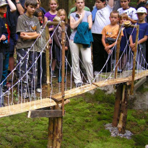

Ročník 2009
Návrat do budoucnosti & Ferda Mravenec, Ostrovec 2009

Návrat do budoucnosti
Navštívil mě Einstein, pánové…
Tak touhle větou jsem začínal svoje vyprávění o cestování v čase a celý tábor zval na cesty do budoucnosti i minulosti. Prožili jsme spolu havárii časostroje, pokusy o jeho opravu, stavbu mostu přes propast „Skalnaté řeky“, setkali jsme se s Albertem Einsteinem a luštili jeho tajenky, abychom nakonec pochopili to, co on už dávno věděl – jak nebezpečné je cestování v čase a tak jsme nakonec náš stroj času rozmontovali a ukryli před nepovolanými…
Na svých cestách po časové přímce jsme luštili šifry, hádanky a veršované vzkazy, potýkali se s hladem i nepřízní počasí, abychom nakonec stanuli před pokladem času. Jestli nakonec zvítězili Ajnštajni, Návratníci, Šarlatáni, nebo Ti, jejichž jméno nelze vyslovit dnes přece vůbec není podstatné – my jsme tam byli všichni a kdybychom chtěli, můžeme se tam znovu vrátit…
Ferda Mravenec
Práce všeho druhu! A to platilo i pro aktivity našich nejmenších miláčků. Postavili jsme celé mravenčí město! Také jsme pomohli Ferdovi sbalit kufry, sehnat jídlo na cestu, a ten potom na našich papírových parnících, lodích a letadlech procestoval celý svět! Z cest nám posílal zprávy o skrytém pokladu. Nebylo to jednoduché, zprávy byly často poničené po dlouhé cestě. To víte, normální poštu jsme použít nemohli! Často jsme si část zprávy museli vyluštit, nebo poskládat z několika částí. Ale nakonec všichni našli svůj kousek Ferdovy odměny, užili si i tu poslední diskotéku a se slzou v oku přislíbili účast v dalším ročníku. I když někteří už u těch starších.